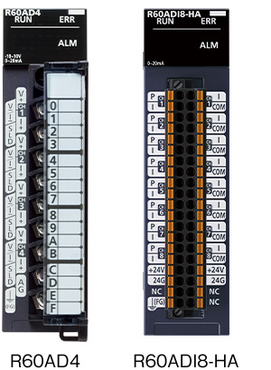
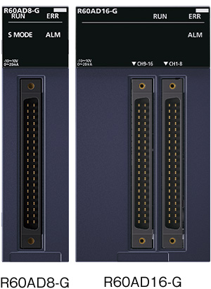
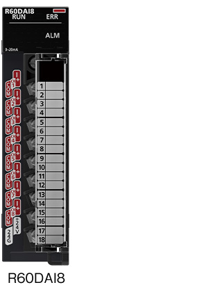

Controllers MELSEC iQ-R Series Product features -Analog-

Analog module
Similar to the digital I/O modules, analog modules are the main interface between various analog devices and the programmable controller. Analog input modules process analog signals from external devices and analog output modules output analog signals are available.
Analog input<sup>Analog input module</sup>
Without channel isolated

R60ADI8
Screw terminal block
Current8-channel
R60ADH4
Screw terminal block
Voltage/current4-channelHigh-speed conversion
1 µs/channel
R60ADI8-HA
Spring-clamp terminal block
Current8-channelHART® communication
With channel isolated

R60AD8-G
40-pin connector
Voltage/current8-channel
R60AD16-G
40-pin connector (2x)
Voltage/current16-channel
R60AD6-DG
40-pin connector
Current6-channel
Analog output<sup>Analog output module</sup>
Without channel isolated
